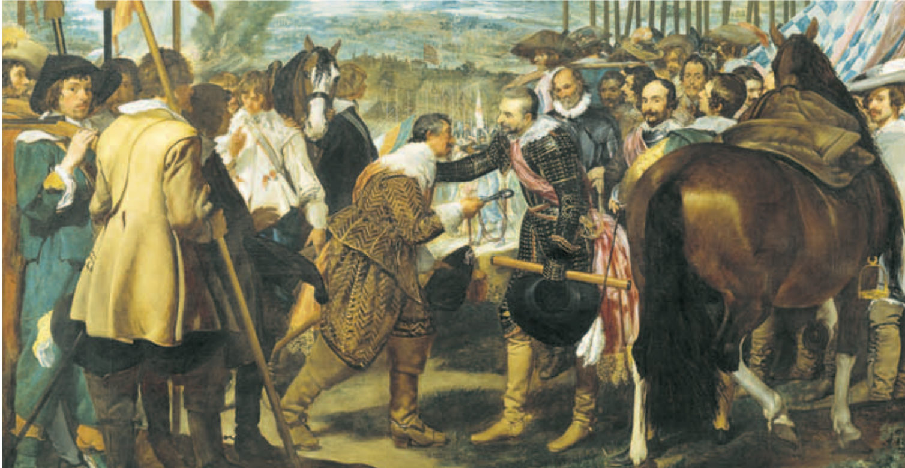
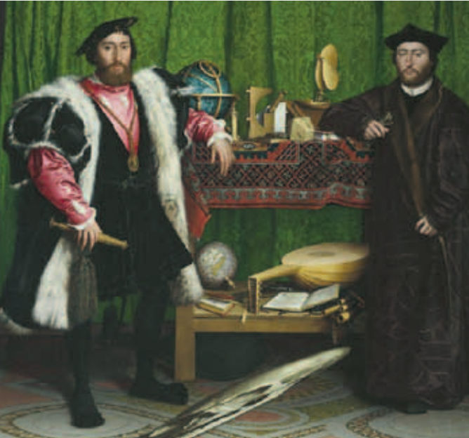

Сегодня разберёмся, почему в XVI–XVII вв. вчерашние друзья-государства могли стать врагами, а вчерашние враги — союзниками, и что значит мудрёное слово «суверенитет».
Перед тем как начать
Загадка параграфа

Сдача Бреды. Худ. Д. Веласкес. 1635 г. С этой картины начинается параграф в учебнике. Посмотри на середину картины: там встретились командиры двух армий.
Вопрос, на который мы ответим в концеЧто изменили в международных отношениях система равновесия сил и политика интересов государства?
Проще: как страны следили, чтобы никто не стал слишком сильным, и как каждая думала о своей выгоде. В этом уроке — пункт 1 параграфа, и на загадку он уже отвечает.
Весь урок в трёх фразах
После раскола церкви никто уже не мечтает об одной общей христианской империи. Каждое государство теперь само себе хозяин. Это называют суверенитетом.
Главным для государства становится его собственная выгода. Учебник называет это государственным интересом. Поэтому союзы стали временными.
Важными стали послы, то есть люди, которые ведут дела с другими странами. А голландец Гуго Гроций написал книгу о правилах для мира и войны.
Слова, которые понадобятся:
Суверенитетверховная власть государства: оно само себе хозяин
Государственный интереспольза и выгода самого государства
Баланс силравновесие: ни одна страна не сильнее всех остальных вместе
Дипломатиядела с другими странами через послов
Естественное правоправила, которые идут от разума и здравого смысла
Международное правоправила, о которых страны договорились между собой
Главный герой: голландский юрист Гуго Гроций.
А вот что происходило в те же годы в мире и у нас, в России:
Мир
1618–1648 гг. — Тридцатилетняя война
1625 г. — Г. Гроций публикует трактат «О праве войны и мира»
1648 г. — мирные договоры по итогам Тридцатилетней войны; начало Вестфальской системы международных отношений
1683–1699 гг. — война союза христианских держав с Турцией
Россия
1558–1584 гг. — Ливонская война
1621 г. — Посольский приказ начинает выпускать рукописную газету, чтобы царь знал, что происходит в других странах
1695 г., 1696 г. — Азовские походы Петра I
1699 г. — союз России, Саксонии, Речи Посполитой и Дании против Швеции
Глава первая
Больше нет «главного над всеми»
В раннее Новое время страны стали вести себя друг с другом совсем не так, как в Средние века. Причины — абсолютизм и Реформация.
Раньше многие мечтали, что все христиане будут жить в одной огромной империи. После раскола церкви эта мечта постепенно уходит. Начинаются войны католиков с протестантами. Раньше воевали в основном за власть между королевскими династиями. Теперь причиной войн стала ещё и вера.
Главная новость: появляется идея суверенитета, то есть верховной власти государства. Проще говоря, каждое государство само себе хозяин. Ни папа римский, ни император ему не указ.
Было (мечта)
все страны под одним началом
Стало
у каждой страны своя верховная власть
Меняется и то, кто решает дела с другими странами. Теперь это делают короли: отправляют послов на переговоры, заключают союзы, объявляют войны. Всё это вместе называют внешней политикой. Знатным людям так делать нельзя. Если вельможа сам начнёт воевать или договариваться с другой страной, его могут обвинить в государственной измене.
Запомни
После Реформации мечта об общей христианской империи отмирает.
Суверенитет: государство само себе хозяин, над ним нет ни папы, ни императора.
Всё, что касается других стран (союзы, договоры, войны), решает только монарх.
Проверь себя
Что постепенно отмирает после Реформации?
Суверенитет — это…
Что теперь могли счесть государственной изменой?
Глава вторая
Воюют не за веру, а за выгоду
Появляются войны нового типа — за богатство: за выгодную торговлю и за колонии. Позже таких войн будет всё больше. Например, во второй половине XVII в. Англия трижды воевала с Голландией. Голландия тогда была главной по торговле на морях, а Англия хотела отнять у неё это первенство.
Раньше короли часто объясняли войны и договоры верой. Теперь всё реже. «Честь» и «репутация» ещё важны, но главным становится другое — государственный интерес.
Простыми словами
Государственный интерес — это польза и выгода самого государства. Главный вопрос теперь: «Что выгодно моей стране?» Вера, дружба и старые обещания отходят на второй план.
Два примера из учебника
Выгода у каждой страны своя, поэтому и поступали они по-разному. Читай сверху вниз: что страна считала главным и что она сделала ради выгоды.
Испания
Главноезащита католической веры
↓
Но ради выгоды…чтобы ослабить Францию, помогала гугенотам
Франция
Главноесвоя выгода
↓
Поэтому…заключала союзы с протестантскими странами и даже с мусульманами
Что из этого следует
1. Сегоднясоюз с этой страной выгоден
↓
2. Завтравыгода стала другой
↓
3. Союзника меняютСмотрят: «выгодно или нет?», а не «хорошо или плохо?»
Поэтому любой мир и любой союз считали временными.
Запомни
Новые войны — за торговлю и колонии: Англия трижды воевала с Голландией.
Государственный интерес — польза самого государства — становится важнее веры.
Союзы временные: союзника меняют по расчёту, а не по совести.
Проверь себя
Что такое государственный интерес?
Зачем католическая Испания помогала гугенотам?
Почему любой союз считали временным?
Глава третья
Дипломаты и весы сил

Послы. Худ. Г. Гольбейн Младший. 1533 г. Это редкий двойной портрет. Как считается, здесь изображены два посла Франции. Один — из родовитого «дворянства шпаги», другой — священнослужитель из семьи «дворянства мантии». К этой картине мы вернёмся в задании.
Сильно вырастает роль дипломатии. С конца XV в. посольства становятся постоянными: посол живёт и работает в чужой стране, а не приезжает один раз. Король и министры всё время пишут ему письма: дают указания и получают новости.
Считалось, что послы представляют своих государей, то есть говорят от их имени. Когда нового посла представляли ко двору, это была сложная церемония на много часов.
В XVI–XVII вв. отношения между странами начинают видеть как единую систему, где всё связано. Важен баланс сил — равновесие, как на весах. Если одно государство становится слишком сильным, остальные объединяются против него и так возвращают равновесие.
Одно усилилось
весы перекосились
Остальные объединились
равновесие вернулось
Точка зрения историка
В учебнике (с. 137) есть отрывок из книги историка Д. Крокстона. Главная мысль в нём такая:
Точка зрения…ни одно государство не могло позволить себе действовать в одностороннем порядке…Д. Крокстон. «Вестфалия. Последний христианский мир»
Вот что сказано в отрывке простыми словами:
Государства поняли, что живут в общей системе, где участвует много стран.
Им могли не нравиться суверенитет и невмешательство. Но на деле приходилось признавать, что другие государства существуют.
Поэтому нельзя было действовать только по-своему и не думать, что скажут остальные: они могли поменять союзников и выступить против тебя.
Важно было не только как ты справишься с врагом сейчас, но и кто из-за этого станет твоим врагом или другом потом.
Запомни
С конца XV в. посольства постоянные; послы говорят от имени своего государя.
Отношения между странами — единая система.
Баланс сил: если одно государство усилилось, остальные объединяются против него.
Проверь себя
Что изменилось в работе послов с конца XV в.?
Что такое баланс сил?
Глава четвёртая
Гуго Гроций: правила для мира и войны
В это время появляются первые попытки понять, как устроен новый мир. Самая известная — книга голландского юриста и государственного деятеля Гуго Гроция «О праве войны и мира» (1625 г.). Его считают основоположником теории международного права.
Гроций опирался на естественное право: правила, которые идут от природы, разума и здравого смысла. Ведь людям естественно хотеть жить в мире друг с другом. Именно это удерживает их от грабежей и других преступлений. А ещё бывает божественное право и человеческое.
Естественноеидёт от разума и здравого смысла
Божественноеправо от Бога
Человеческоезаконы, которые люди устанавливают сами, порой ненадолго, в своих интересах. Сюда относится и международное право: договорённости между государствами
Какие бывают войны по Гроцию
Войны вообще Гроций не отвергал. Но он требовал, чтобы и на войне соблюдались правила.
Справедливаявойна в ответ на нарушение права, например когда на государство напали
Несправедливаязахватническая: нападают, чтобы захватить чужое
Ещё Гроций выступал за свободу мореплавания: чтобы корабли всех стран могли свободно плавать по морям.
Запомни
1625 г. — Гроций публикует «О праве войны и мира». Его считают основоположником теории международного права.
Основа его идей — естественное право.
Войны бывают справедливые и несправедливые; правила нужны и на войне. Гроций — за свободу мореплавания.
Проверь себя
Какую войну Гроций считал справедливой?
На что Гроций опирался в своих идеях?
Теперь твоя очередь
Поработаем сами
1. Работаем с хронологией
Расположи события в правильном порядке. Нажимай на них по очереди: какое было раньше всех — первым. Даты есть в таблице «Мир и Россия» в начале урока.
2. Работаем с картиной
Вернись к картине Гольбейна «Послы» в главе третьей и рассмотри её.
Какие предметы ты видишь на картине? Какое отношение они могут иметь к дипломатии?
ПодсказкаПосмотри на стол между послами: что стоит на верхней полке, а что на нижней? Найди глобусы, книги, музыкальный инструмент. А теперь подумай, что должен знать и уметь посол, который живёт в чужой стране и говорит от имени своего короля. В учебнике предлагают ещё поискать в интернете, что означают эти предметы.
3. Работаем с источником
Перечитай пересказ отрывка Д. Крокстона в главе третьей.
Как ты понимаешь эти изменения? Каковы были их последствия?
ПодсказкаИзменения: государства поняли, что живут в общей системе и должны считаться друг с другом. Последствия ищи в этом же пункте: союзы стали временными, выросла роль послов, страны следят за балансом сил и объединяются против того, кто стал слишком сильным.
4. Вопросы учебника
Сначала ответь сама, устно или в тетради. Потом открой подсказку, а в конце сравни свой ответ с примером.
Насколько взгляды Гроция совпадали с тем, как в его время понимали отношения между странами и как на деле поступали государства?
ПодсказкаСравни главы вторую и четвёртую. Что Гроций говорил о войнах, правилах и договорах? А как на деле поступали государства, если думали о своей выгоде?Сравни со своим ответом
Отчасти.
Что совпадало. Гроций не был против войн вообще, как и короли того времени. Международное право он считал договорённостями между государствами. А мир как раз и состоял из самостоятельных государств.
Что не совпадало. На деле каждая страна думала о своей выгоде: союзы были временными, союзников меняли по расчёту, а не по совести. А Гроций требовал правил даже на войне и делил войны на справедливые и несправедливые.
Итог: Гроций описал новый мир и предложил ему правила, но жизнь часто шла по-другому. В учебнике советуют поискать ещё и дополнительные источники.
Как появление идеи суверенитета повлияло на отношения между странами?
ПодсказкаВспомни главу первую: кто теперь стоит над государством? Кто решает дела с другими странами? И что из этого вышло в главах второй и третьей?Сравни со своим ответом
Исчезла мечта об одной общей христианской империи. У государств больше нет «начальника» в лице папы или императора.
Дела с другими странами стали делом одного монарха. Знатные люди не могут сами воевать и договариваться: это измена. Значит, отношения теперь идут между государствами.
Каждое государство думает о своей выгоде, поэтому союзы временные.
Выросла роль послов, а отношения стали единой системой: все следят друг за другом и за балансом сил.
Разгадка
Подведём итоги
В раннее Новое время отношения между странами стали мало похожи на средневековые. Государства больше никому не подчинялись и думали о своей выгоде, а отношения между ними стали единой системой.
Что изменили равновесие сил и политика интересов государства?Союзы стали временными, а за силой каждой страны внимательно следили все остальные.
Каждое государство само себе хозяин. Над ним нет ни папы, ни императора, а внешней политикой занимается только монарх.
Главным стал государственный интерес. Вера отходит на второй план: католическая Испания помогает гугенотам, Франция дружит с протестантами и мусульманами.
Союзы стали временными. Сменилась выгода — меняют и союзника.
Все следят за балансом сил. Если одно государство усилилось, остальные объединяются против него. Поэтому так выросла роль постоянных послов.
Появились первые правила. Гроций в книге «О праве войны и мира» (1625 г.) предложил правила для отношений между странами.
Даты
Посмотри на дату и сначала вспомни сама, что тогда произошло. Только потом нажми и проверь себя.
Выбери дату, вспомни событие — и нажми.
Слова и люди
На каждой карточке вопрос. Сначала ответь на него мысленно, а потом нажми на карточку и сравни со своим ответом.